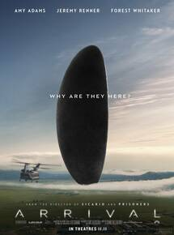

Diretor: Denis Villeneuve.
Elenco: Amy Adams, Jeremy Renner, Forest Whitaker.
Gênero: Ficção Científica/Thriller.
Censura: 14 Anos.
Tempo de duração: 1h 58m.
Sinopse:Naves alienígenas chegaram às principais cidades do mundo. Com a intenção de se comunicar com os visitantes, uma linguista e um militar são chamados para decifrar as estranhas mensagens dos visitantes.